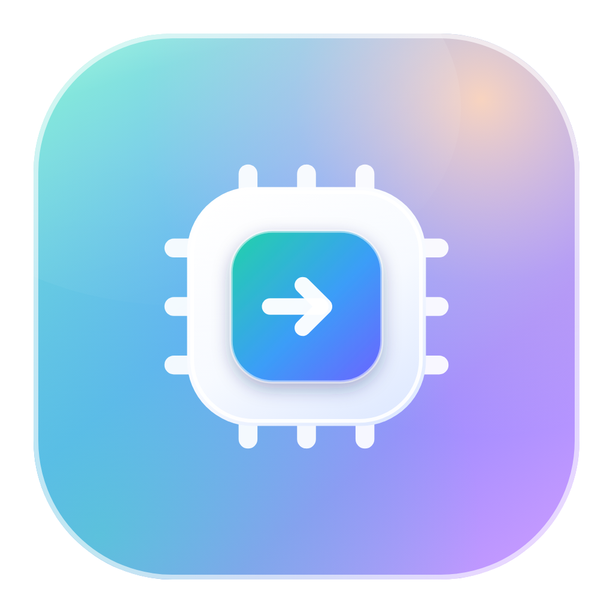
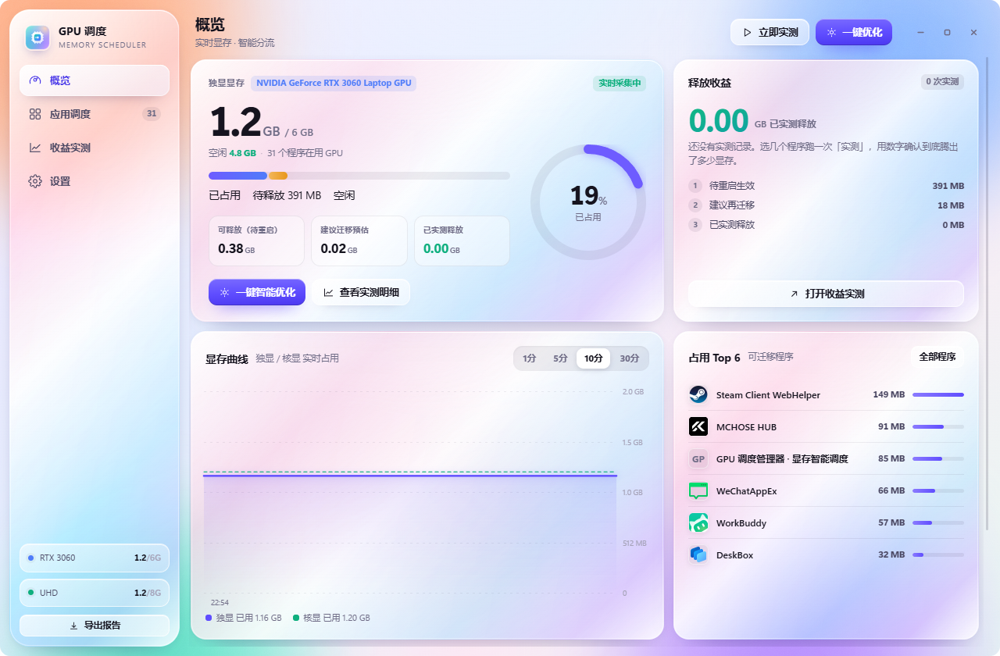
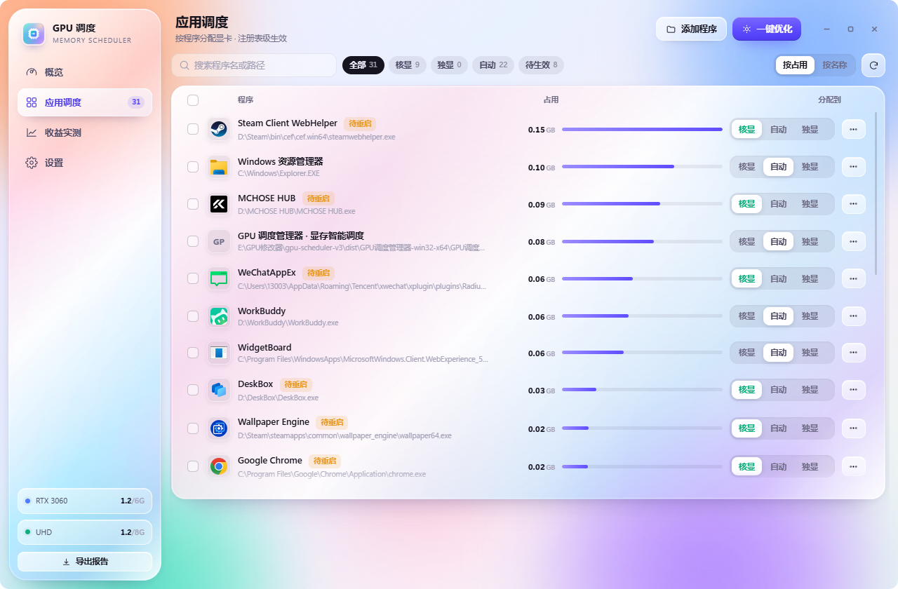
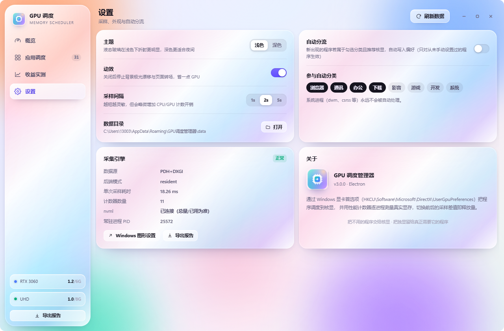
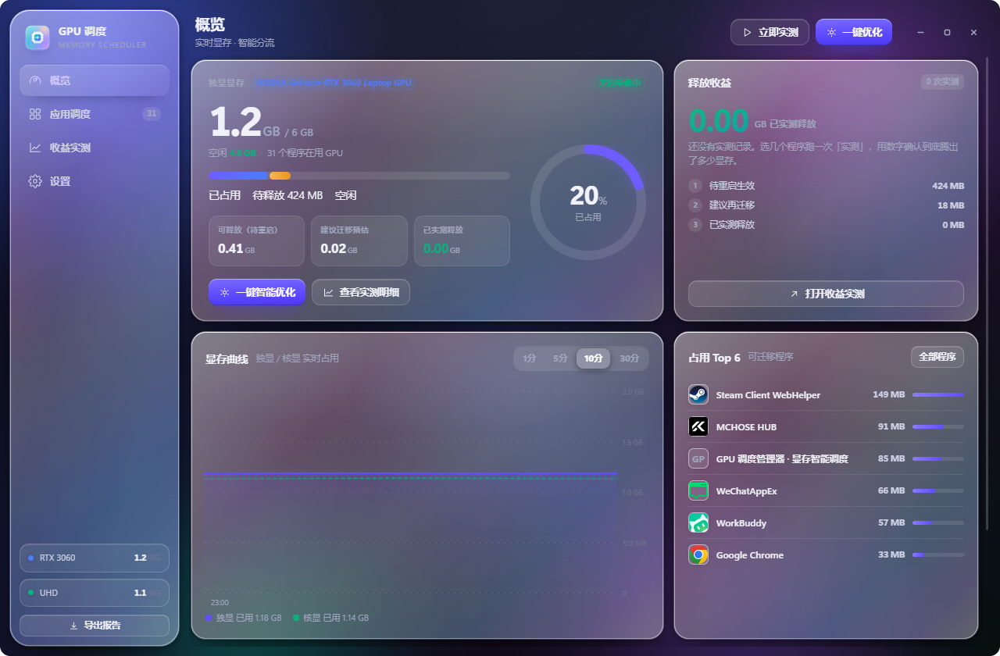

WINDOWS 10 / 11让显存留给真正在跑的程序。
后台程序切到核显，独显的显存回到前台程序手里。
桌面、浏览器、聊天工具、壁纸、驱动面板——它们不一定在画东西，但都向显卡要了一块显存，而且不会主动还。
程序打开时向显卡申请显存，之后一直持有。
最小化、切到别的窗口，占用的那部分不会自己还回来。
Windows 的图形设置里，每个程序都要单独点一次，还得知道它装在哪。
整个工具只做三件事，每一件都能自己核对。
读整卡占用，也读每个进程的占用。排序之后，谁在吃一眼看得出来。
把选中的程序写成「节能」，下次启动它就落在核显上。
重启前后各采一段整卡占用，相减得到这一次真正释放了多少。
不是本工具的私有配置。系统设置里能看到同一份，想换回来也一样。
位置就是「设置 → 系统 → 显示 → 图形」在用的那份，任务管理器里也认。
写 HKCU，不申请管理员，不改系统级策略，不碰驱动。
在列表里点回「自动」，那条注册表项就被删掉，恢复系统默认。
不用先跑一轮。整卡用了多少、有多少写了还没生效、还有多少能腾，都在第一屏。
直接读 NVML，和任务管理器显示的一致。
偏好已经写进去了，但程序还在跑旧进程。
规则判断适合走核显、还没迁的后台程序。

按占用排序，把要挪走的程序勾上，一次写完，不用逐个点进系统设置。

按显存大小排，谁在吃一眼看得出来。
勾一个和勾八个，都是一次提交。
智能优化会列出准备改哪些、各占多少，确认之后才写。
没有 exe 路径就写不进偏好，这类进程直接隐藏。
不估、不猜。跑一次 A/B，把前后的整卡占用相减。
只看 PID 有没有变，没变就继续等，不提前下结论。
按采样波动算：噪声小记「高」，波动大就标「低」。
页面会写明这是估算，不当作结果记录。
这不是 bug。逐进程计数器报的是提交量，桌面合成会把桌面缓冲重复计入。所以三个数字分开算，谁也不冒充谁。
| 指标 | 数据来源 | 它能说明什么 |
|---|---|---|
| 待生效 | 逐进程计数器 | 偏好已写、程序还没重启的那部分占用。重启后才有可能变成真的释放。 |
| 可释放 | 规则预估 | 还能迁多少。是估算，用来决定下一步做什么，不写进结果。 |
| 已实测 | 整卡 A/B 采样 | 重启前后两次均值相减。只有这个算「释放」，另外两个都是参考。 |
说清楚跑某个体量的东西还差多少、该迁哪几个。
新程序第一次出现时，按规则给出走哪块卡的建议。
一次实测导出成 Markdown，带时间、明细和置信度。
两套配色分别调过对比度，夜里看着不刺眼。


免安装，不写系统目录，删掉文件夹就干净了。
挑那些不在前台、又占着显存的，点应用。
跑一次实测，数字会留在「收益实测」页里。